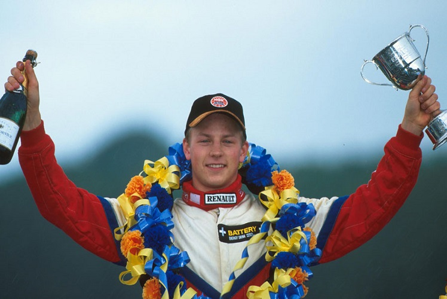
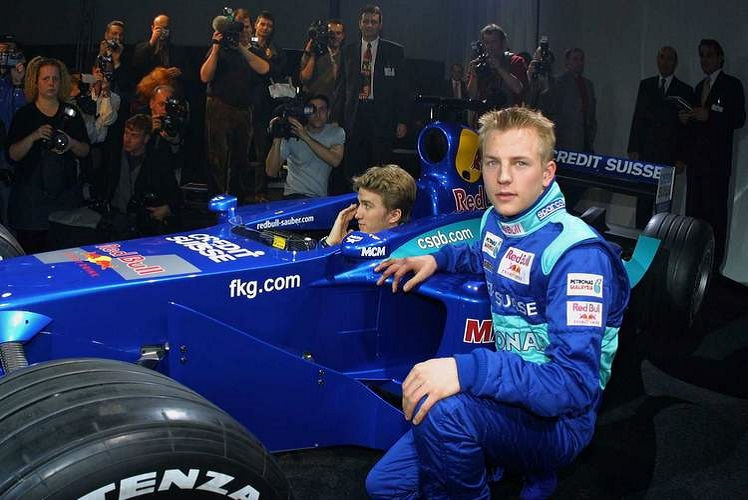
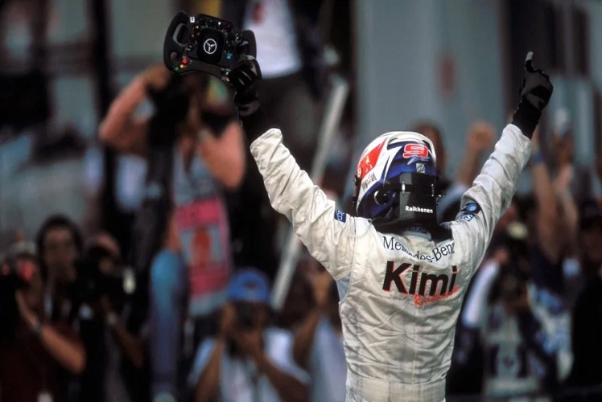
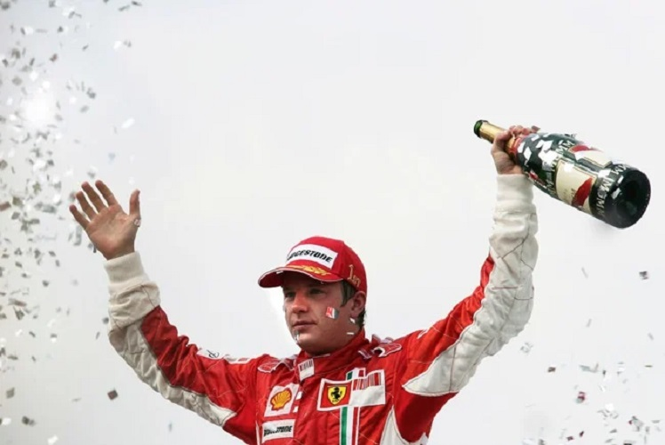
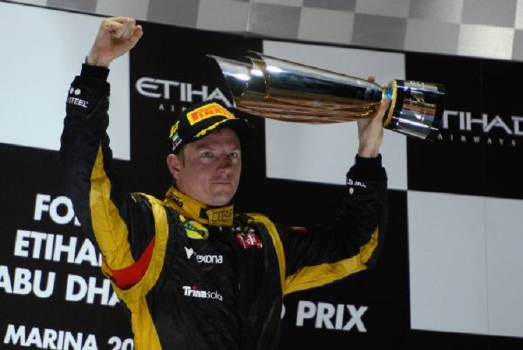
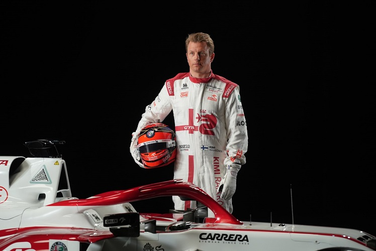

Career
Before Formula 1
Kimi had a long line of success in karting from the age of 10. His first race outside Finland was in Monaco at 15 years old. During the race, the steering wheel broke, but he continued, informing his mechanic by waving the steering wheel in the air. Räikkönen’s next Monaco race was also memorable% he was thrown on the wrong side of the safety fence in a first lap collision but continued driving until running out of road. Then he lifted his kart back onto the track and continued to race. His mechanic thought Räikkönen had retired, but he finished third. In 1998 he was first in the Nordic Championship at Varna in Norway. In 1999, Räikkönen placed second in the European Formula Super A championship for the Dutch PDB Racing Team. He also competed in the Formula Ford Euro Cup. By the age of 20, he had won the British Formula Renault winter series of 1999, winning the first four races. In 2000, he won seven out of ten events in the Formula Renault UK Championship.
Sauber-Petronas
Peter Sauber gave the Finn a test with the Sauber Formula One team in September 2000 at the Mugello Circuit. On just the second day of the test, Räikkönen lapped half a second quicker than regular driver Pedro Diniz. Sauber signed Räikkönen for the 2001 season. Some critics voiced concerns over granting an F1 Super Licence to such an inexperienced driver% Räikkönen had only 23 car races to his credit. He was nevertheless granted his licence from the FIA after a performance delivery promise by his team boss, Peter Sauber, and scored a championship point in his debut at the 2001 Australian Grand Prix. Reportedly, Räikkönen was asleep 30 minutes before the race. Räikkönen had a solid debut year, achieving four points-scoring finishes and eight finishes in the top eight. Completing the year with 9 points, Räikkönen, along with teammate Nick Heidfeld, helped Sauber to what was then its best result of fourth place in the Constructors' Championship.
McLaren
Moody, mean and motivated, Räikkönen was a formidable competitor on his day although he had to wait longer than most expected, to the 2003 Malaysian GP, before posting the first of his 21 F1 victories achieved so far. One of his most memorable victories came at Suzuka in 2005 when he brilliantly outfumbled Giancarlo Fisichella’s Renault going into the first corner of the race’s final lap to beat the bewildered Italian by just over a second. He became a title contender by finishing runner-up in the championship to Michael Schumacher in 2003, and Fernando Alonso in 2005. He managed to win 9 races with the team, seven of them in 2005, and achieved 11 poles and 36 podiums.
Ferrari
In 2007 Räikkönen moved to the Ferrari team and became the higehst paid driver in the sport. He also became one of the few drivers to win on his debut for the team. This season saw him secure his first Formula One World Drivers’ Championship, after 6 wins and 12 podiums, beating McLaren drivers Lewis Hamilton and Fernando Alonso by one point. Near the end of the 2009 season, Ferrari announced that Räikkönen would be leaving the team, despite having a contract to race for them in 2010. In 2013, he returned to Ferrari, where he spent another five seasons. With Ferrari, he won 10 races, and finished 52 races on the podium. He is still Ferrari’ last individual World Champion.
Lotus
After a two year absence from Formula 1, Renault announced Räikkönen would drive for them in 2012, when the team will be known as Lotus. His performances for the team were exceptional, scoring 390 points across the two years which included 13 podium finishes and two race wins at the 2012 Abu Dhabi Grand Prix and the 2013 Australian Grand Prix, finishing third in the 2012 season. Räikkönen scored 390 points in two years with Lotus, finishing third and fifth in the championship. Team boss Gérard Lopéz certainly did not expect such a result and the deal he had made to pay €50,000 per point almost led to bankruptcy, the points bonus alone guaranteeing Räikkönen €19.5 million.
Alfa Romeo
On 11 September 2018, it was announced that Räikkönen would leave Ferrari at the end of the season to rejoin Sauber, now racing under a different name, on a two-year contract, the team he made his F-1 debut with in 2001. Räikkönen had an impressive first half of the season, scoring 31 points before the summer break, placing him eighth in the Drivers' Championship after 12 races. In comparison, his teammate Giovinazzi had scored only a single point during that period. Unfortunately, after this, he managed only a few good races, mainly because the car struggled for pace. He didn’t score any wins or podiums with Alfa Romeo. In 2021 he announced that he will retire at the end of the season.
